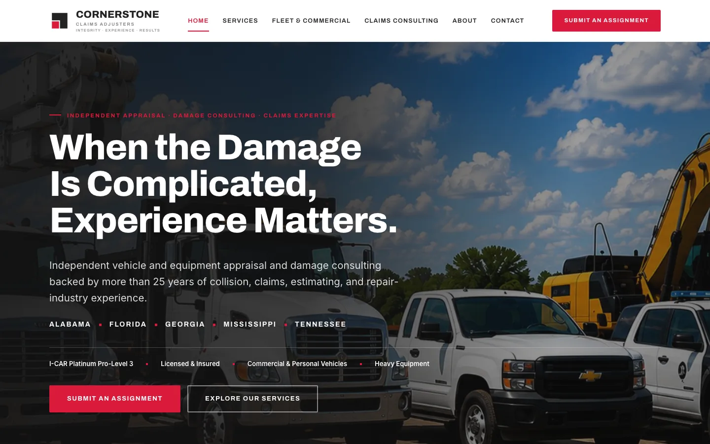
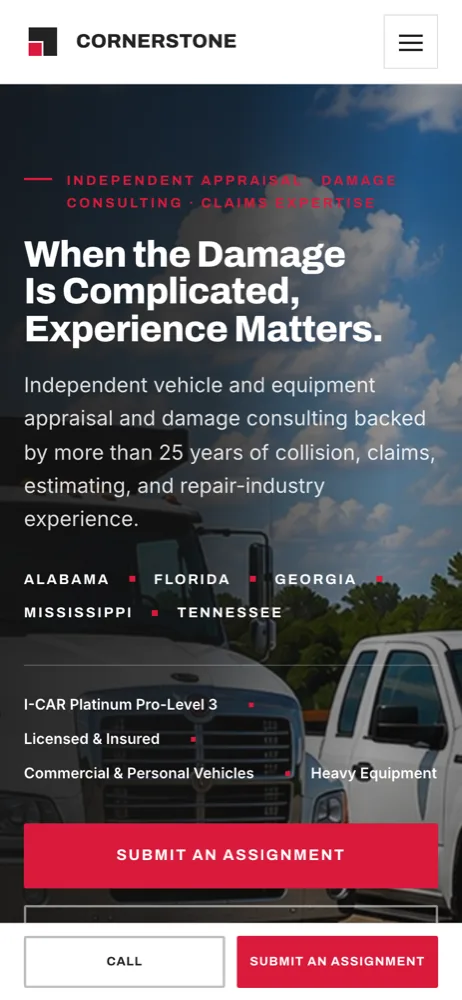
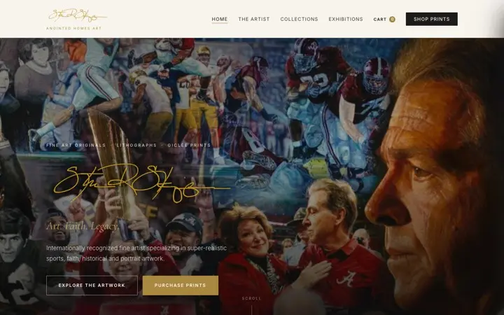
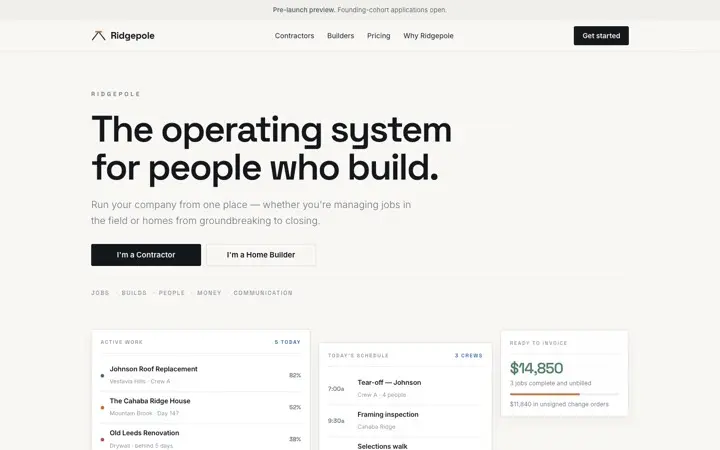

Cornerstone Claims Adjusters
Cornerstone Claims Adjusters, LLC is an independent vehicle and equipment appraisal and damage consulting firm serving Alabama, Florida, Georgia, Mississippi and Tennessee.


What changed for the client
- Assignments arrive through a form built for the work instead of a phone call.
- Businesses and fleets can engage the firm directly, without an insurance claim.
- Experienced adjusters apply to the roster themselves.
- Every service line the firm actually handles now has a page that says so.
The problem
Carriers, fleet operators and attorneys call Cornerstone when a claim gets complicated — but the old site read like a template and never said so. Work arrived by phone, there was no clear way to send an assignment, and nothing on the page explained what the firm actually handles: mechanical causation, fuel contamination, estimate audits, post-repair inspections, disputes.
What we built
Eight pages that separate the three audiences the firm serves: carriers and attorneys, businesses and fleet operators who engage Cornerstone directly without an insurance claim, and experienced adjusters applying to the roster. Each gets its own route and its own form — an assignment intake that asks for the unit, the access, the file and the ask; a contact form; and a roster application that captures specialty, coverage area and availability.
How it is built
A hand-coded static site generated from one shared template, so the header, footer and navigation cannot drift apart across pages. It is hosted on Netlify with every form wired to email the office the moment it is submitted, and if a submission ever fails the page says so rather than showing a confirmation it did not earn.
The move itself
The site replaced a Wix build on a domain the firm did not host, so the cutover had to change the public site without interrupting mail. The MX records were preserved untouched through the switch, the certificate was issued on the real domain, and the site went live with search indexing turned on the same day.
Steve R. Skipper Studio

Steve R. Skipper Studio
A gallery-first home for an internationally recognized sports, faith, and portrait artist.
Read the case study
Ridgepole
The operating system for contractors and home builders — jobs, builds, schedules, change orders, and a client portal.
Read the case studyNeed something like Cornerstone Claims Adjusters?
Send a short note or call. You will get a reply from Dylan, a fixed written quote, and a realistic timeline, usually within one business day.